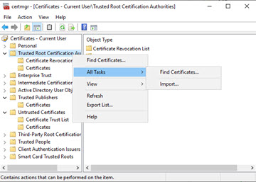
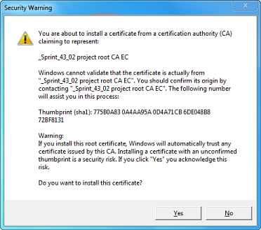

Importing an external web certificate
This procedure describes how to install a certificate on a device. It is required if the device is used to connect to a web server, for example by using a web browser.
Import a certificate in MS Windows
- ABT Site is the certification authority.
- You have exported the root certificate from ABT Site.
Exporting the web root certificate
- Open the root certificate file (*.crt)
- Click Install certificate.
- The Certificate Import Wizard dialog box opens.
- Click Next.
- Select Place all certificates in the following store.
- Click Browse.
- Select Trusted Root Certification Authorities.

- Click Next.
- A warning is displayed.

- Confirm the warning with Yes.
- Click Finish.
- You have imported a certificate. The certificate is now trusted.
Import a certificate on an Android device
- ABT Site is the certification authority.
- You exported the root certificate from ABT Site.
Exporting the web root certificate
- Send the root certificate to a mobile device (e.g. by signed email or shared repository). Note that some email clients do not work with certificate attachments. Use an E-Mail web client instead.
- Open the certificate.
- Provide a name for the certificate when requested. For example: <Project Name> Root CA.
- The root certificate is visible under “USER CERTIFICATES”
The root certificate is only available for the default Chrome browser.
Import a certificate on an Apple IOS device
- ABT Site is the certification authority.
- You exported the root certificate from ABT Site.
Exporting the web root certificate
- Send the root certificate to a mobile device (e.g. by signed email or shared repository). Note that some email clients do not work with certificate attachments. Use an E-Mail web client instead.
- Open the certificate
- Click Accept.
- Install "Test project root CA EC" where Test is the name of the ABT Site project.
- Enter the PIN of your IOS device.
- Click Install.
- Now the "private CA root certificate" is validated.
- To activate this root certificate go to Settings.
- Go to Settings > General > About > Certificate Trust Settings.
- Under Enable full trust for root certificates, turn on trust for the certificate.